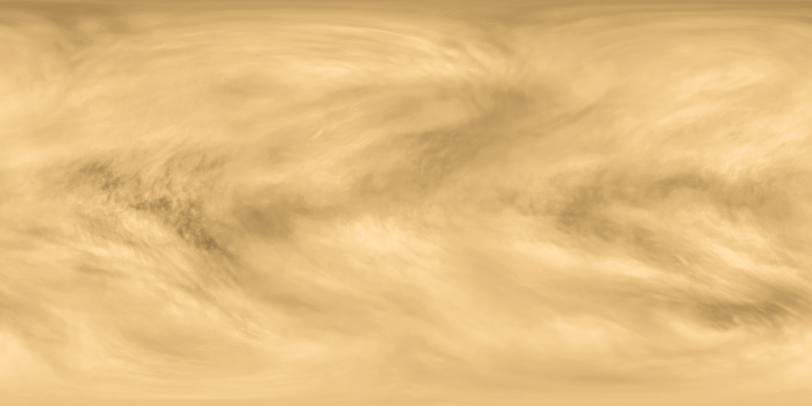
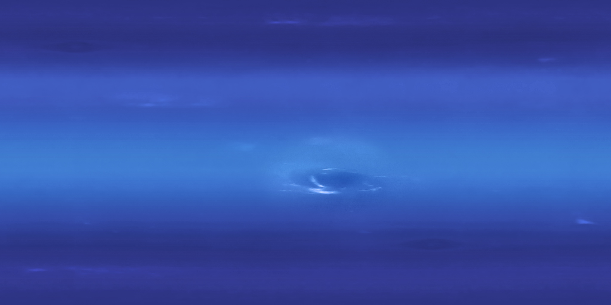

Marker belum ditemukan. Arahkan kamera ke Hiro.
Memuat AR dan meminta izin kamera…
Izinkan kamera. Tampilkan seluruh marker Hiro dengan batas hitamnya di tempat terang. Pilih planet untuk memperbesar, lalu pilih Tata Surya untuk kembali.
Gunakan Jeda dan Kecepatan untuk mengamati gerakan.
Buka marker Hiro untuk dicetak atau ditampilkan di layar lainUkuran, jarak, dan waktu orbit bukan skala astronomi nyata.

